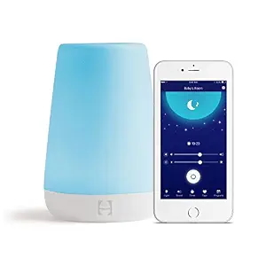
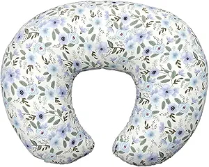
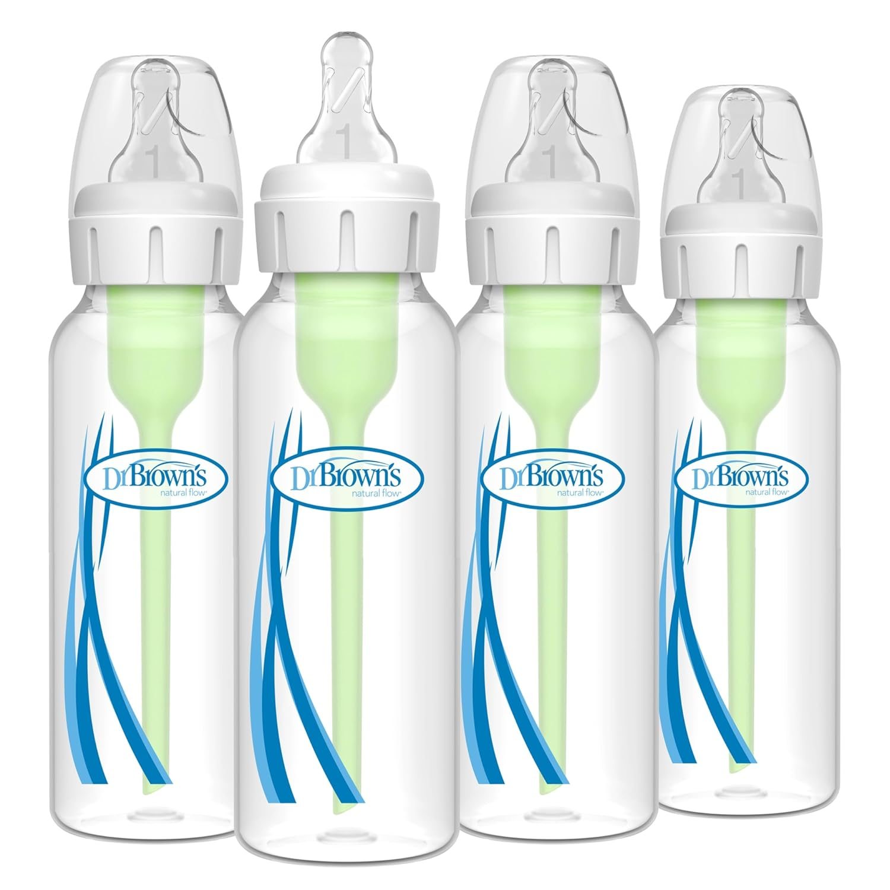
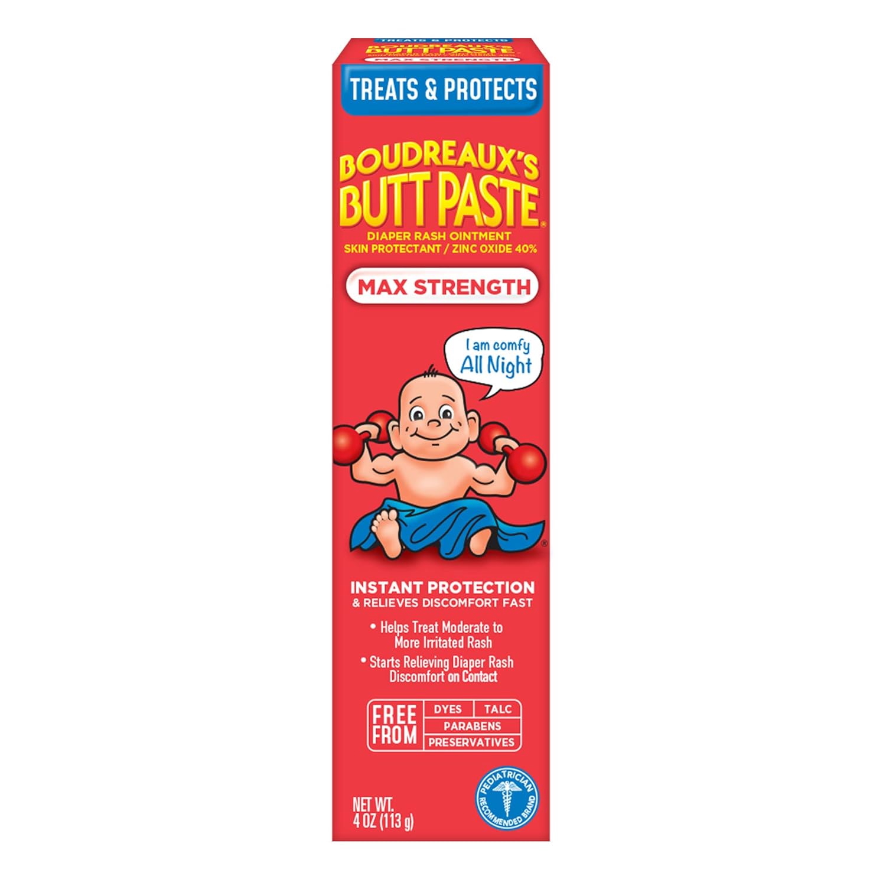
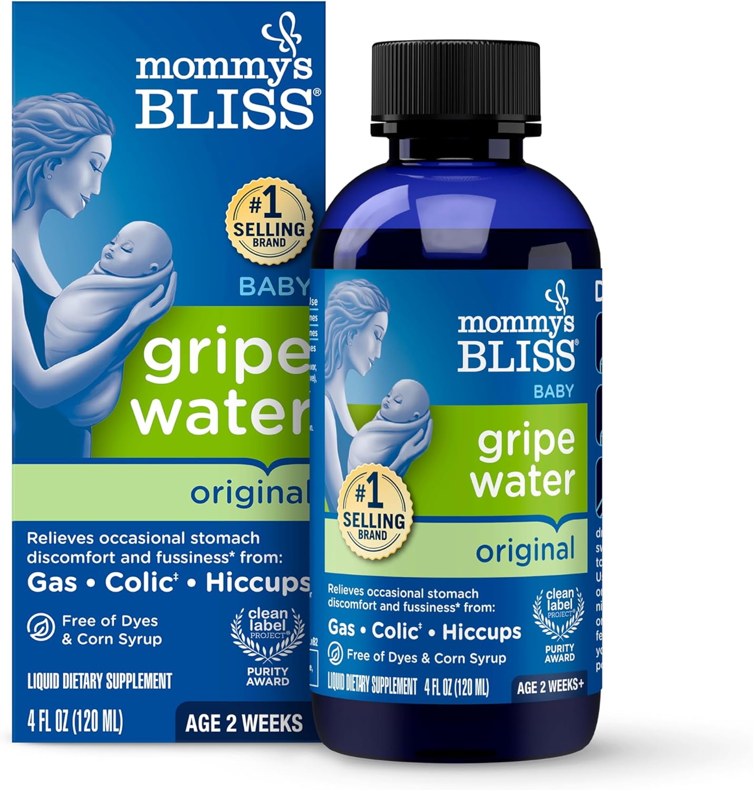
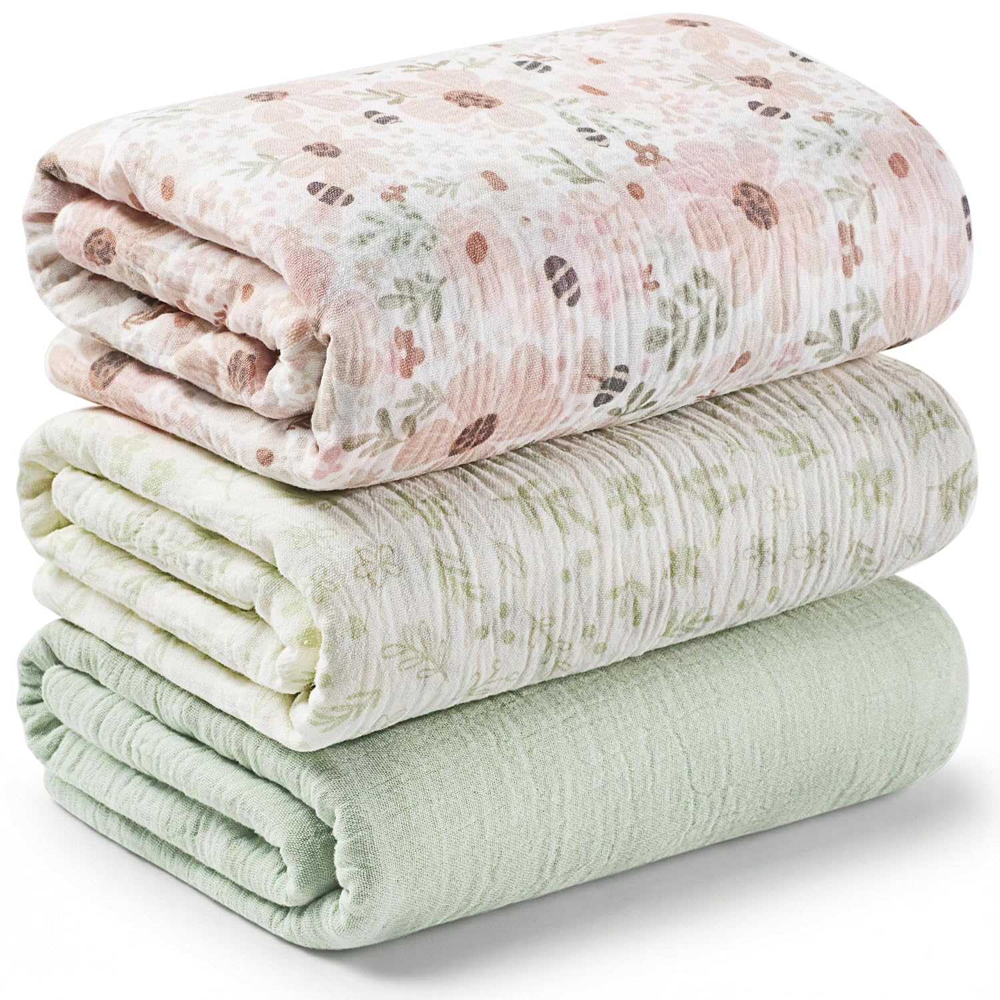
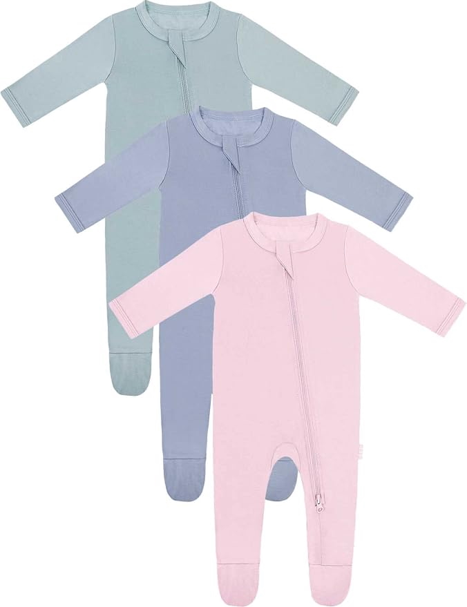
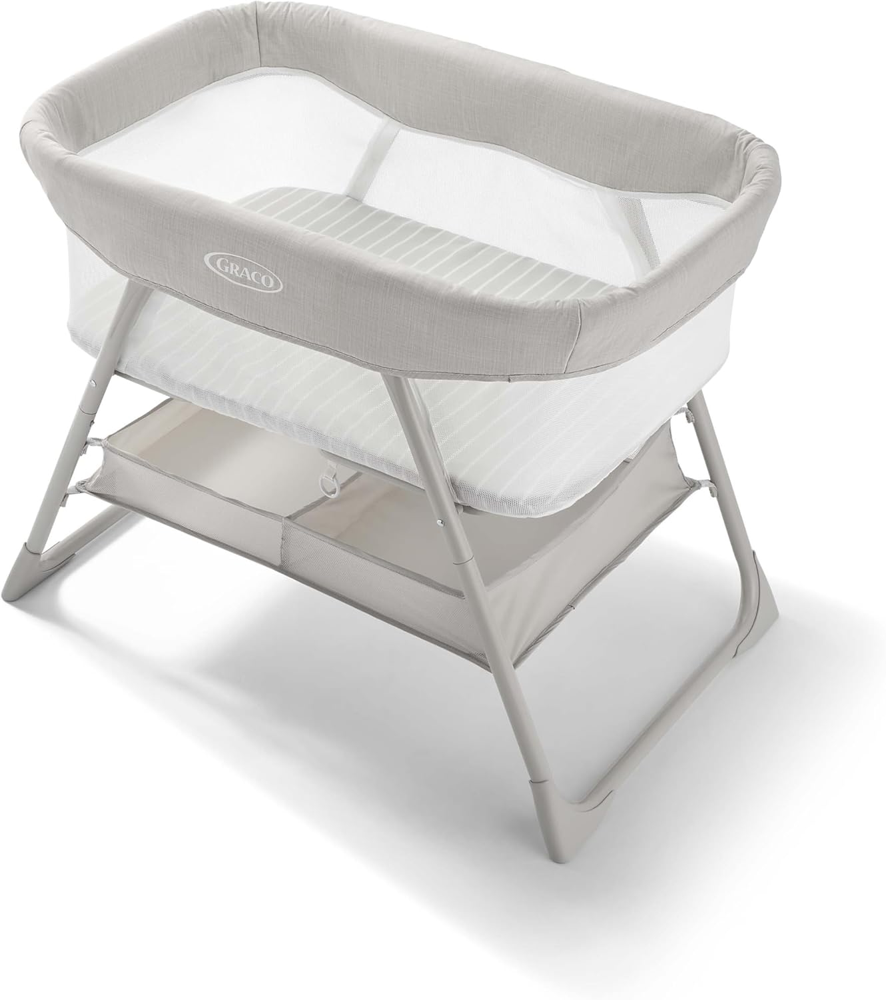
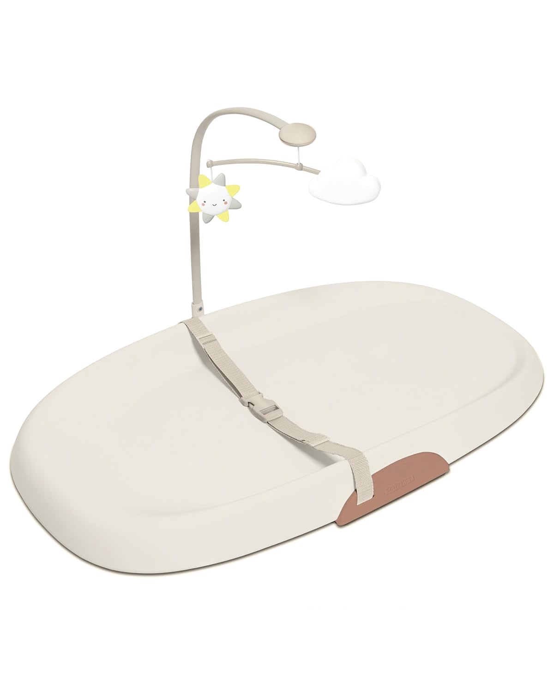

Why These Products Made a Difference
When I first started preparing for my baby, I felt overwhelmed by all the different products that were available. It seemed like everyone had a different opinion about what was necessary. After using many of these products myself, I realized that I didn't need everything on the market. The products below are the ones that truly became part of our everyday routine and made life a little easier.
I chose these recommendations because they helped with feeding, sleeping, diaper changes, and staying organized. Every family is different, but I hope this list gives you a good place to start if you're getting ready to welcome a new baby.
| Product | Image | Why I Recommend It | Link |
|---|---|---|---|
| Hatch Sound Machine |  |
It helped create a calm bedtime routine and made nights feel easier. | View Product |
| Boppy Pillow |  |
It made feeding more comfortable and gave extra support during long feeding sessions. | View Product |
| Dr. Brown's Bottles |  |
These bottles helped reduce gas and made feedings go much smoother. | View Product |
| Boudreaux's Butt Paste |  |
It worked really well whenever my baby started getting diaper rash. | View Product |
| Gripe Water |  |
It helped soothe my baby during fussy moments and gas discomfort. | View Product |
| Muslin Swaddle Blankets |  |
I preferred these over Velcro swaddles because they were softer and more flexible. | View Product |
| Two-Way Zipper Pajamas |  |
These made middle-of-the-night diaper changes so much easier. | View Product |
| Graco Bassinet |  |
Keeping my baby next to my bed made nighttime feedings much easier. | View Product |
| Silicone Changing Pad |  |
It was easy to wipe clean and saved me from constantly washing covers. | View Product |
Final Thoughts
There are so many baby products available today that it can be hard to know where to start. My advice is to keep things simple and remember that every baby is different. You don't need every product you see online. Over time, you'll discover what works best for you and your family. I hope these recommendations help make your journey a little easier.